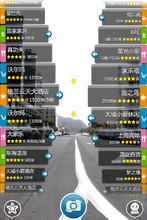

AR国内现状
作为新型的人机接口和仿真工具，AR受到的关注日益广泛，并且已经发挥了重要作用，显示出了巨大的潜力。
AR是充分发挥创造力的科学技术，为人类的智能扩展提供了强有力的手段，对生产方式和社会生活产生了巨大的深远的影响。
随着技术的不断发展，其内容也势必将不断增加。而随着输入和输出设备价格的不断下降、视频显示质量的提高以及功能很强大但易于使用的软件的实用化，AR的应用必将日益增长。AR技术在人工智能、CAD、图形仿真、虚拟通讯、遥感、娱乐、模拟训练等许多领域带来了革命性的变化。
总体来讲，增强现实在中国处于起步阶段，许多虚拟现实领域的企业已经开始专注于“增强现实”的研发和应用。比如中视典数字科技研发的VRP12.0就集成了增强现实的功能。
城市镜头是国内首款聚合了目前移动互联最新AR（增强现实）技术的智能手机应用。并致力打造全新的城市导游、导览、导购，景点与游客、商户与用户无缝链接全新的移动互联多资源整合平台。
举起爱机，面向要去的方向。整街商铺、公共设施悉数罗列。摄像头实景展现功能，让您看到、听到、闻到，给您身临其境，新奇有趣的导航体验。换个方向，又是完全不同的搜索结果，所谓“城市镜头手机中，前后左右铺不同”。 给用户以新奇实用的导航体验。
应用整合了各城市旅游、餐饮、娱乐、购物、生活、媒体等人们生活中所需的一切信息，并有精准的AR（增强现实）朝向数据导航，为用户轻松定位、准确指引。从而方便、快捷、有效的帮助人们对所需品的选择，提高城市生活质量。
该软件还提供了全面的城市室内导航、景点园区导航等攻略：如城市概况、景点园区导航（游览项目介绍、距离、等待时间等）、商圈室内导航、城市特色及文化推荐等，让用户轻松感受本地精华，做最好最全面的城市导游、导览、导购新平台。
AR-interesting，an interesting web
copyright 2016 By Interesting Working Group
Most contents above (photos included) are derived from the Internet.